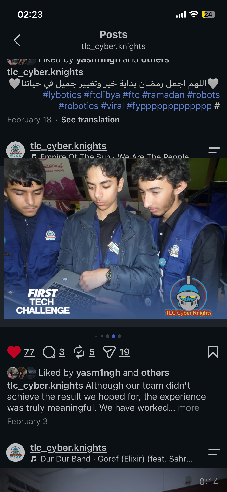

Teams and roles
- Teams: TLC CyberKnights and LyBrix
- Seasons: 2024–2025 and 2025–2026
- Roles: Lead Programmer for Autonomous and Robot Designer
I am a robotics student interested in autonomous programming, mechanical design, CAD, and engineering. This portfolio documents my technical experience, projects, achievements, and independent work.
My work combines software, mechanical design, CAD, prototyping, and competition testing across multiple FTC seasons.
These are team achievements supported by my individual programming and robot-design contributions.
Projects spanning embedded systems, agriculture, education, manufacturing, and software.
Built, programmed, tested, and improved a prototype designed to detect fire and toxic gases and initiate an automatic response. The project included fire-extinguishing functionality. I presented it independently to hundreds of people and participated in an interview.
Worked with a teammate on programming and presenting a soil-moisture monitoring and watering project. It achieved first place in my class.
A future project concept exploring affordable drone technology for distributing seeds across rural land in Libya. This project has not yet been built.
Experience with Onshape, FTC robot design, CAD-based mechanisms, shooter designs, prototyping, and performance testing.
Helped teach unpaid sessions covering Arduino Uno fundamentals, FTC robotics, programming, and live coding demonstrations.
Produce and sell FTC robot components and manage an order website. I have contacted more than 20 robotics teams and reported over 10,000 LYD in sales revenue.
Built four websites for businesses or organizations, including two paid projects, primarily using Lovable.
Created promotional and social-media videos, including paid projects for companies.
Evidence includes certificates, photos, videos, and CAD designs. Public links can be added as they become available.

Awards: Science Fair Winner, Physics Genius of the Year, and Grade 9 second place.
Skills: FTC programming, Arduino, Onshape CAD, robot design, 3D printing, and web development.
This portfolio documents my robotics, engineering, programming, design, education, and independent work for teams, educators, universities, and people researching my technical experience.
Contact details and additional project links can be added when ready. Keep private contact information off public pages.